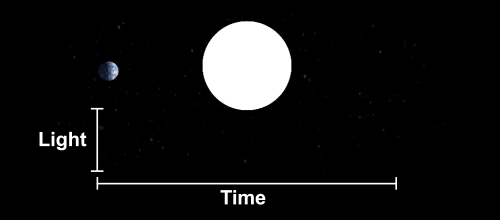
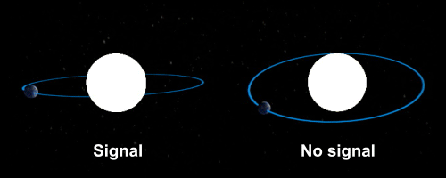

How many
Earths?
Looking up at the night sky, it's hard not to wonder how many other planets might be circling those pinpricks of light – and how many are home to beings gazing back at us.
Today, we are starting to get a handle on the number of roughly Earth-sized exoplanets that might be suitable for life.
How to spot a planet
We can take a good guess at the number of alien Earths thanks to NASA's Kepler space telescope.
When a planet passes in front of its parent star, it blocks some of the star's light. The Kepler telescope looked for distant worlds by measuring this dip in stars' glow.

▼ Next▲ Previous
In the frame
Kepler focused its gaze on the area of sky marked out by this grid of squares near the constellation Cygnus.
The telescope's detectors were trained on some 150,000 target stars in this grid for nearly four years until the end of its active planet-hunting days in May 2013.
▼ Next▲ Previous
Kepler's haul
The green dots show the possible planets discovered in Kepler's data so far.
To pursue our quest, we must exclude planets that are nothing like our home world. First, let's remove everything twice the diameter of Earth or larger, which are likely to be gas giants like Jupiter and Saturn.
▼ Next▲ Previous
In the Goldilocks zone?
The remaining planets are the right size, but not all of them will be ripe for life, with life-sustaining liquid water.
We can't determine a planet's composition from Kepler's data, but we can see whether a planet seems to orbit in the habitable zone around its parent star.

▼ Next▲ Previous
These might be like home
This is our best estimate for the number of potentially life-bearing worlds among the planets spotted by Kepler. But we're missing much of the picture.
Kepler could spot only planets that passed between their parent stars and the telescope's viewpoint – even a slight tilt in a planet's orbit could make it invisible to the telescope. And the farther out a planet orbits, the more likely it was to be missed.

▼ Next▲ Previous
Earths galore
After extrapolating for all the missing worlds, Kepler's field of view becomes dense with planets that may be like Earth.
Now consider this: Kepler observed just 0.28 per cent of the sky. And the telescope was able to peer out to only 3000 light years away, studying less than 5 per cent of the stars in its field of view. So how many Earths might really be out there?
▼ Next▲ Previous
A crowded galaxy
Expanding our view from Kepler's corner of the galaxy to show more of the Milky Way, the sky fills with billions of potentially life-bearing worlds. If we showed them all, the sky would be a mass of green. So now the green dots illustrate stars that might host such planets, visible with a good pair of binoculars on a dark night here on Earth.
From this perspective, the chances that we're alone in the cosmos seem very slim, indeed.
▼ Next▲ Previous
The search continues
The Kepler telescope may no longer be hunting for alien Earths, but more discoveries are sure to come as researchers work through the backlog of data it gathered. In 2017, the search will be taken up by the Transiting Exoplanet Survey Satellite, which will survey nearby stars across the entire sky.
▼ Next▲ Previous
Credits
Thanks to Natalie Batalha, Jon Jenkins and other members of the Kepler mission team for technical advice.
Learn more about the data used in this graphic.
Produced by Adam Becker, MacGregor Campbell and Peter Aldhous.
Published 25 September 2013.
⇧ Back to top ▲ Previous